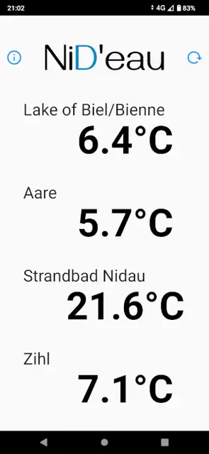

NiDeau
إنترنت ومتصفحات
NiDeau is an Android app for displaying the water temperatures around Nidau (a village in Switzerland). It displays the temperatures of the waters of Lake of Biel, Aare, Zihl and Nidau swimming pool.
✓ ترخيص مفتوح (GPL-3.0-or-later) · آخر تحديث: 2024-03-09
2.1.0الإصدار
18.8 MBالحجم
GPL-3.0-or-laterالرخصة
Open in Kanzتحميل APK (18.8 MB)
Download APK
SHA-256: d135d46e016833d8779ce56f2836dcae07e6226c2f72f24d24f40e8e7bae11e5

امسح الكود لفتح صفحة التطبيق
Scan to open this app page
لو كنز مش متثبت عندك: نزّل متجر كنز.
Not installed? Get the Kanz store.